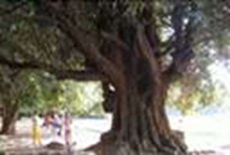
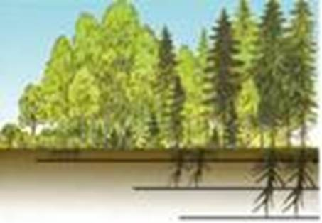

Ярусность
Ярусность (см. Рис. 1) – характерная для растительных сообществ разница в высоте стеблей растений и глубине проникновения корней. В сообществах, образованных одной растительной формой (степи, луга), выражена слабо.

Рис. 1. Ярусность
Ярусы леса:
I. Дубы, липы, березы
II. Рябины, черемухи
III. Кустарники
IV. Травы и папоротники
V. Мхи и лишайники
От яруса к ярусу освещенность в лесу падает. Поэтому в нижних ярусах живут самые теневыносливые растения.
Срастание частей растений
В густых зарослях ветки деревьев одного вида могут срастаться. Так, парротия персидская (см. Рис. 2) образует непроходимые заросли. Корни деревьев также могут срастаться. Если срубить одно из сросшихся деревьев, то оставшиеся используют его корневую систему. Срастание корней и сомкнутость крон повышает ветроустойчивость всего леса.

Рис. 2. Парротия персидская
Подземные части растений также расположены ярусами (см. Рис. 3). Глубже всех проникают корни деревьев, а на самой поверхности – корни трав.

Рис. 3. Ярусность корневой системы
Лесная подстилка
Лесная подстилка – ярус, верхний слой лесной почвы, состоящий из опавших листьев, ветвей и других отмерших частей растений. Она богато населена беспозвоночными, микроорганизмами, грибами. В результате их жизнедеятельности происходит разложение отмерших остатков растений и обогащение почвы перегноем.
Сезонность
В субтропиках зима, как правило, без отрицательных температур. Сезоны выражены слабо, и зимой цветут некоторые растения. Среди вечнозеленых растений встречаются крупные кустарники и небольшие деревья.
В тропиках холодный сезон отсутствует. Но происходит смена влажного и сухого сезонов. Растения вечнозеленые. Или могут опадать на время засухи.
Сезонные изменения в растительном сообществе
В одном сообществе живут растения с неодинаковыми ритмами развития, что способствует более полному использованию питательных веществ и солнечной энергии.
Так, в лесах средней полосы России растет орешник. Он цветет, когда листья еще не раскрылись, что способствует переносу пыльцы ветром. Раннее цветение орешника – приспособление к ветроопылению.
В лесах средней полосы деревья, кроны которых расположены в верхнем ярусе, опыляются ветром и цветут до появления листьев. Их плоды и семена также разносятся ветром. Большинство кустарников опыляются насекомыми (малина, крушина, жимолость), так как под пологом леса практически не бывает сильного ветра. Их плоды распространяются лесными птицами. Травянистые растения цветут до появления листьев у растений верхних ярусов, потому что в это время есть достаточная освещенность. После появления листьев на верхних ярусах цветение и фотосинтез трав становятся неэффективными.
Сожительство организмов в растительном сообществе
Два вида организмов растительного сообщества могут жить в симбиозе.
Симбиоз
Симбиоз – тесное и длительное сожительство организмов 2 разных видов. Ранее под этим понятием подразумевали взаимовыгодное сожительство, теперь – любое сосуществование.
Взаимовыгодное сожительство теперь называют мутуализмом.
Комменсализм (нахлебничество) – отношения, безразличные одному симбионту, но полезные другому.
Амменсализм – отношения, вредные одному симбионту и безразличные другому.
Паразитизм – отношения, вредные оному симбионту, но полезные другому.
В мутуалистических отношениях состоят грибы и корни растений (микориза), бобовые и клубеньковые бактерии.
Петров крест способен присасываться к корням растений и паразитировать на них. Он полностью утратил хлорофилл и способность к фотосинтезу.
Омела белая – растение-полупаразит. Оно имеет хлорофилл и способно к самостоятельному синтезу питательных веществ.
Все растения-паразиты образуют большое количество семян из-за низкой вероятности найти организм-хозяина.
Аллелопатия – отрицательные и положительные взаимодействия между растениями в фитоценозах.
Высшие растения выделяют колины – вещества, служащие для подавления жизнедеятельности других высших растений.
Аллелопатию можно рассматривать как форму экологической конкуренции между организмами в биоценозах.
Смена растительных сообществ
Для растительных сообществ можно выделить периоды зарождения, расцвета и старости.
Естественная смена сообществ может быть вызвана изменением климата, состава почвы, жизнедеятельностью растений. Под влиянием этих причин одни виды в сообществах могут появляться, а другие – исчезать. Так, при постепенном зарастании озера на его месте образуется болото. При высыхании болота его растительность постепенно сменяется лесной.
В березовых рощах в средних ярусах растут теневыносливые ели, которые вырастают и занимают верхние ярусы. Старые березы гибнут, а молодые не выживают из-за недостатка света под еловыми кронами. Со временем произойдет смена трав на характерные для елового леса.
Смена растительных сообществ может происходить в результате хозяйственной деятельности человека.
Список литературы
1. Биология. Бактерии, грибы, растения. 6 кл.: учеб. для общеобразоват. учреждений / В.В. Пасечник. – 14-е изд., стереотип. – М.: Дрофа, 2011. – 304 с.: ил.
2. Тихонова Е.Т., Романова Н.И. Биология, 6. – М.: Русское слово.
3. Исаева Т.А., Романова Н.И. Биология, 6. – М.: Русское слово.
Дополнительные рекомендованные ссылки на ресурсы сети Интернет
1. Biolicey2vrn.ucoz.ru (Источник).
2. Life-nature.ru (Источник).
3. Doml.ru (Источник).
Домашнее задание
1. Биология. Бактерии, грибы, растения. 6 кл.: учеб. для общеобразоват. учреждений / В.В. Пасечник. – 14-е изд., стереотип. – М.: Дрофа, 2011. – 304 с.: ил. – с. 280, задания и вопрос 5, 7 (Источник).
2. Какие существуют способы взаимоотношения между 2 организмами?
3. Как происходит смена растительных сообществ?
4. * Подумайте, смогло ли бы существовать сообщество, где не было бы вообще никаких взаимодействий между растениями. Ответ обоснуйте.